我们已经解释过，如果一个矩形的邻边之比为黄金比例，也就是模数为黄金比例，那么它就是黄金矩形。从现在开始，我们将学习如何轻松地识别、绘制黄金矩形。
生活中的矩形：测量电视
众所周知，电视的尺寸是根据屏幕对角线的长度以英寸计算的（1英寸大约等于大拇指第一节的长度）。在公制中，1英寸相当于2.54厘米。
大多数欧洲国家最常用的单位制是公制，所以许多欧洲人（以及按照公制接受教育的学生）在购买新电视时很难搞清确切的尺寸。知道了屏幕的长度及其邻边之比，我们便可以用更容易理解的公制单位准确算出它的尺寸。公制单位不会给我们带来诸如电视预留位置不合适的麻烦。一台拥有32英寸屏幕的电视的长宽比为16:9，对角线长为32×2.54=81.28厘米。所以它的两条邻边的真实长度为9a和16a。虽然看起来不可思议，但我们将用历史上最古老的定理来解决现代问题。为了计算a的值，我们会用到毕达哥拉斯定理：
（9a）2+（16a）2=81.282
81a2+256a2=337a2=6 606.44
a2=6 606.44/337=19.6
a=≌4.43厘米
这样，两边分别长9×4.43=40厘米、16×4.43=71厘米，屏幕的尺寸为40厘米×71厘米。
经过同样的计算后，一台长宽比为4:3的32英寸老电视的公制尺寸为49×65厘米。由此我们得出了一个超出数学范畴的结论：用宽屏电视替换老电视机并不容易！尽管两种电视机的对角线一样长，但是原来放老电视机的壁橱根本放不下宽屏电视。
在此之前，我们最好从黄金矩形的某些性质入手，这样有利于对其进行更加深入的研究。前面已经讲过，为了将线段AB分成两部分，使得AB等于Φ乘以较长部分，AB上的点X必须满足：
AB/AX=AX/XB
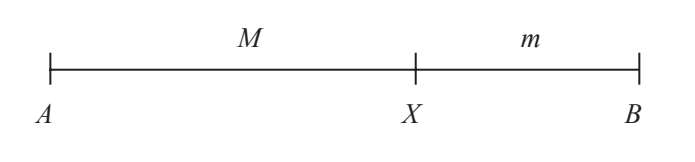
然后我们设AX的长为M，XB的长为m。由于AB=M+m，因此
（M+m）/M=M/m=Φ （4）
假设有一个与左下图相同的黄金矩形。如果把一个四边相等的矩形（即正方形）放在它较长边的一侧，这样就组成了一个邻边分别为M和（m+M）的新矩形，如右下图所示。根据（M+m）/M=M/m，如果最初的矩形是黄金矩形（满足M/m=Φ），那么这个新矩形也是黄金矩形，因为（M+m）/M=M/m。通过这种方法，我们能够绘制出更大的黄金矩形。
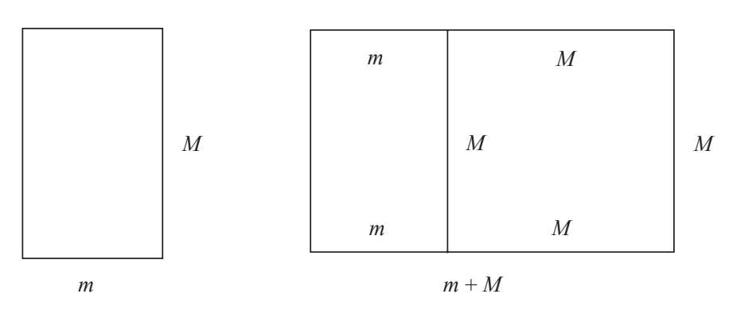
磬折形
古希腊人观察到某些生物的尺寸、数量虽不断增大，但形状总是保持不变。他们把这种现象称为磬折形增长（gnomonic growth）。
来自亚历山大的发明家和工程师希罗对磬折形（gnomon）定义如下：“在任意原始图形上增加一个新图形，得到的图形和原始图形（在数学上）相似，那这个新增的图形便是磬折形。”黄金矩形的磬折形是正方形，边长等于黄金矩形的长边。
如下图所示，如果从黄金矩形内的短边一侧去掉一个四边相等的矩形（正方形），那么同样可以得到一个新的黄金矩形。接下来我们画一个边长为m、M-m的矩形。很显然，这样得到的矩形更小，但它仍可以是黄金矩形，只要满足：
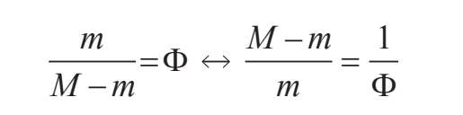
由于等式（4）中M/m=Φ，因此
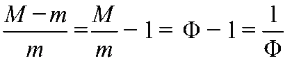
同样证明了黄金矩形。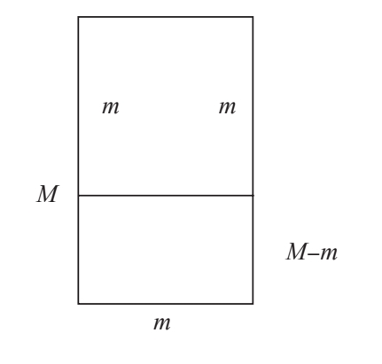
同前面提到的相似矩形一样，下面也有一个简单而快速的方法，不用测量边长就能确定矩形是否为黄金矩形。如左下图所示，把两个相同的矩形并排在一起，第一个矩形水平放置，第二个矩形垂直放置。然后像右下图那样用直线连接顶点A和B。如果直线正好穿过顶点C，那这两个矩形就是大小相等黄金矩形。
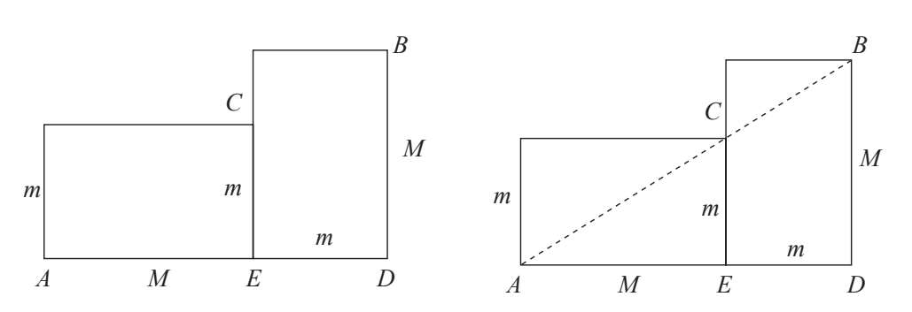
如何解释黄金矩形的这一性质？根据泰勒斯定理，两条平行线过三角形的两边所截线段成比例。右图中，要想让AB穿过点C，只要
AD/DB=AE/EC
然而如果我们计算这几条边的长度就会得到：
（M+m）/M=M/m
又一次得到了定义Φ的等式（4）。
如果我们手边有一把黄金比例尺（参见下页框中的解释），只需要将短边的两个顶点调整到与矩形的宽相同的位置，然后检查长边的两个顶点的间距是否与矩形的长相等。如果相等，那这个矩形就是黄金矩形。
制作黄金比例尺
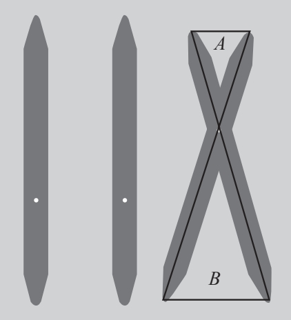
黄金比例尺是一种构造简单、制作容易的工具。它的用途是绘制具有黄金比例的线段，或者验证两条线段是否符合黄金比例。
制作黄金比例尺的方法有很多。最简单的一种是选择硬纸板、塑料片或薄木板，将其切割为两根宽2厘米、长34厘米的细条，再把每一端削尖。在每根细条某一端的13厘米处钻一个小孔。
通过小孔把两根细条组装到一起，确保它们可以活动，用双脚钉的效果不错。当我们移动细条，就会得到两腰分别为21厘米和13厘米的等腰三角形。13和21是斐波那契数列中的两个连续项，因此它们的比值接近黄金比例。在每一把黄金比例尺中，每一端的两个顶点之间的距离之比同样符合黄金比例的近似值。
黄金比例尺操作起来非常容易。要查看两条线段之比是否符合黄金比例，我们只要将黄金比例尺短边的两个顶点对准较短的线段，保持它的形状不变，然后将比例尺另一端的两个顶点对准较长的线段。如果顶点之间的距离与较长线段的长度相同，那这两条线段的长度之比就符合黄金比例。
制作黄金比例尺（续）
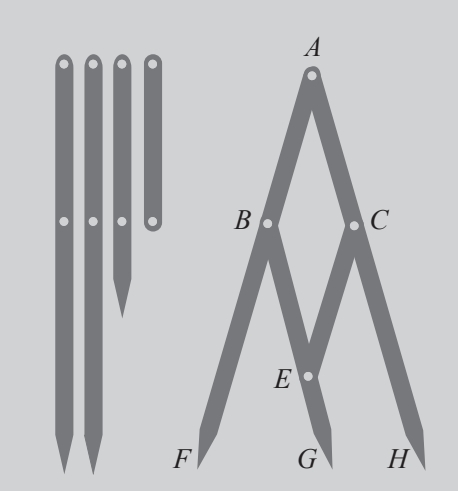
制作黄金比例尺的第二种方法相对复杂，但测量结果却更加精确，因为它能同时显示出两条成黄金比例的线段。这次我们需要的零件更细，四根1厘米宽的细条。其中两根长34厘米，一根长21厘米，另一根长13厘米。
像右边第一张图一样，在每根细条上钻两个孔。第一个孔钻在顶端一侧，第二个孔距第一个孔13厘米。然后按照上方右图把4根细条组装到一起。组装完成后，黄金比例尺各部分的长度如下：
AF=AH=34厘米
BG=21厘米
AB=AC=BE=CE=13厘米
EG=8厘米
所有长度都是斐波那契数列的项。在使用黄金比例尺时，顶端FG与GH的长度之比总是非常接近黄金比例。当我们将FG、GH这一端放在任意线段上（最长68厘米），点G将该线段分成M和m两段，M/m=Φ。
绘制黄金矩形
有了前面的学习，下面的内容就会轻松许多。要想绘制黄金矩形，我们只需要对目前掌握的所有性质加以运用就可以了。
我们首先画出正方形ABCD，它的边将作为黄金矩形的宽（短边）。在正方形的一条边AB上标出中心点M。以M为圆心，MC（点M到对边任意顶点的距离）为半径画弧，弧线与AB的延长线相交于点E。
线段AE就是黄金矩形的长。然后只需要过E点做AE边上的垂线，与DC的延长线相交于点F，这样就画出了黄金矩形AEFD。
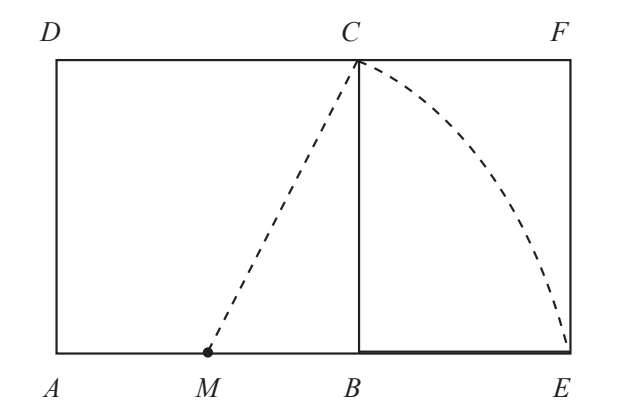
下面通过计算来验证一下它的邻边之比是否符合黄金比例。设AB=AD=1，那么AE=AM+ME=1/2+ME。由于ME等于直角三角形MBC的斜边，因此我们可以用毕达哥拉斯定理得到
ME2=MC2=MB2+BC2=（1/2）2+12=1/4+1=5/4
因此
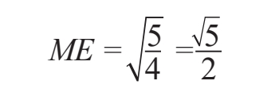
求出
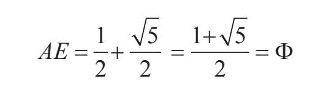
这样，矩形AEFD的邻边分别为1和Φ。毫无疑问，它是一个黄金矩形。
黄金矩形的特征
如果我们从黄金矩形AEFD中去掉一个正方形，剩下的矩形BEFC仍是黄金矩形。如果在这两个黄金矩形中各画一条对角线，就会发现它们总是相交成直角。不仅是AF和CE，DE和BF这两条对角线也是如此（注意：每一对对角线相互垂直）。
请看下图：
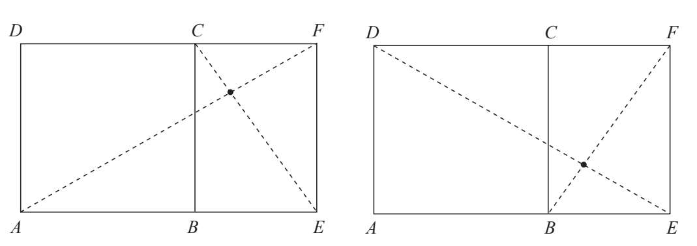
如果我们不断去掉正方形就会得到越来越小的黄金矩形。如果在这些黄金矩形中画出与上图相同的对角线，我们就会发现它们都是最开始的对角线DE和BF上的线段。因此这些对角线总是相互垂直，它们的交点始终都是点O：
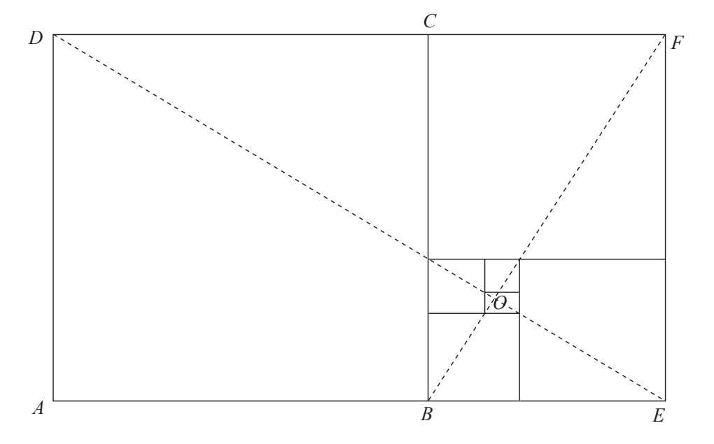
如果我们可以用显微镜来观察所有去掉正方形的黄金矩形，那么所有对角线的交点仍是O，而每次去掉的面积都是原来面积的1/Φ。只有黄金矩形才拥有这个奇妙的特性。点O就像一个旋涡，一个几何黑洞，用无限大的吸引力聚集了无数个黄金矩形在其周围。
如果我们把正十边形（十条边和十个角都相等的多边形）内接于圆内，圆的半径比正十边形的边长恰好是黄金比例。
因此我们可以说，黄金矩形的长就是圆的半径，而它的宽就是圆内接正十边形的边长。我们会在第三章中对这种关系做出更加详细的解释。
正多边形和内接多边形
各边各角都相等的多边形为正多边形。只有各边相等或只有各角相等的多边形不是正多边形。举例来说，菱形各边相等，但角度不同，因此不是正多边形。拥有四条边的正多边形只有正方形。矩形的四个内角都是90°，但是四条边两两相等，因此不是正多边形。
各个顶点都在同一个圆上的多边形是内接多边形。如果一个正多边形有n条边，画出它的外接圆，连接外接圆的圆心与正多边形的两个相邻顶点，这样就构成了一个等腰三角形。它的两腰就是外接圆的两条半径，底边与正多边形一条边的边长相等。该三角形的不等角（又称圆心角）的角度为（360/n）°。
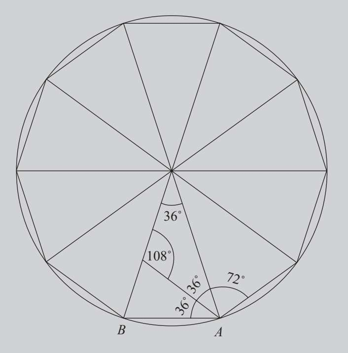